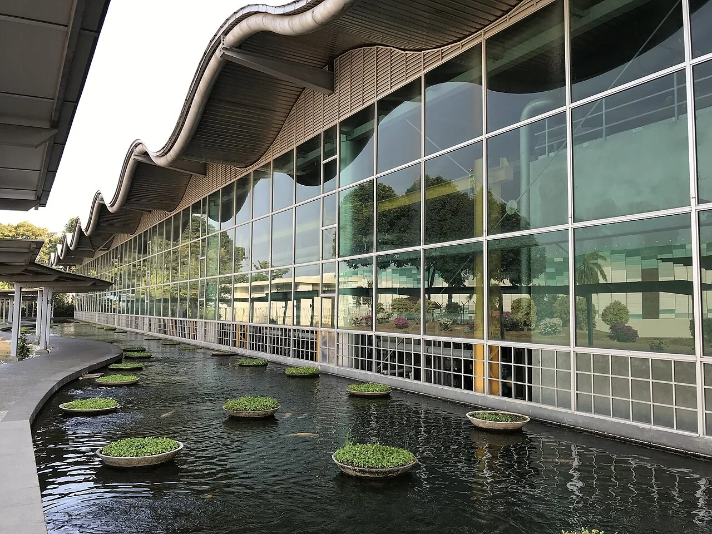
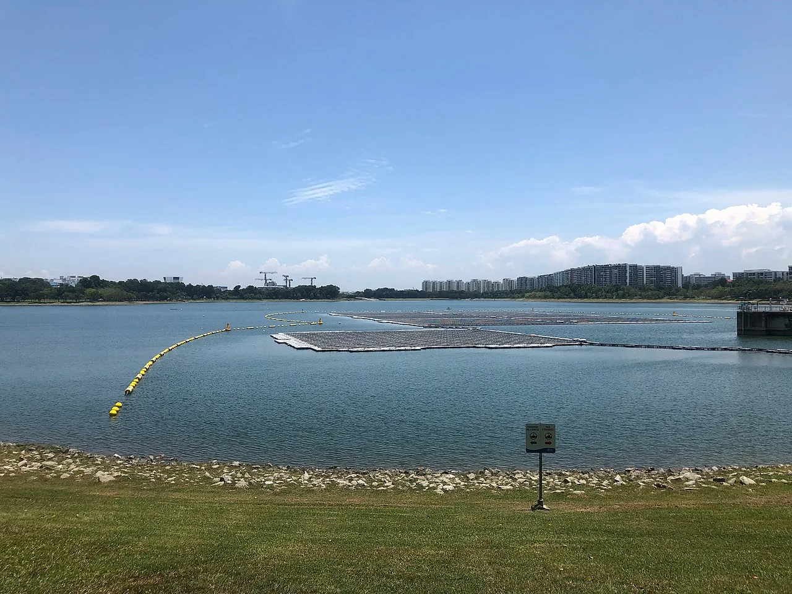
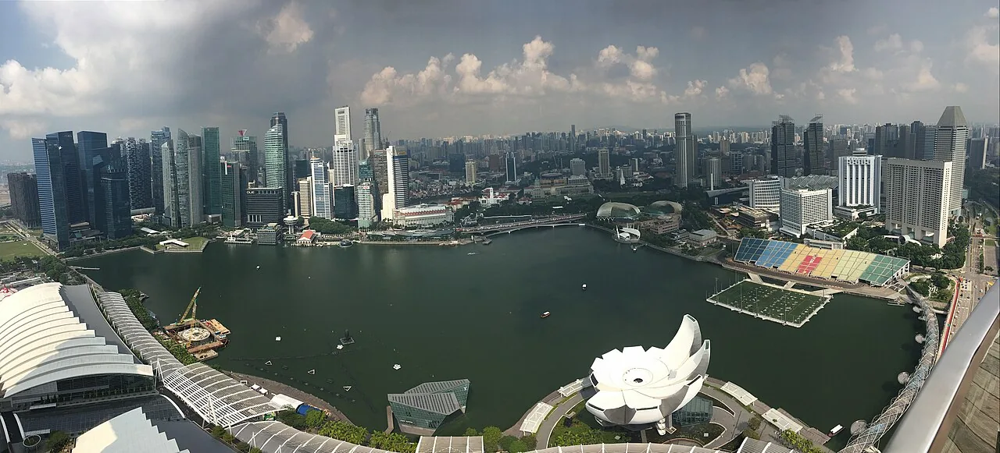
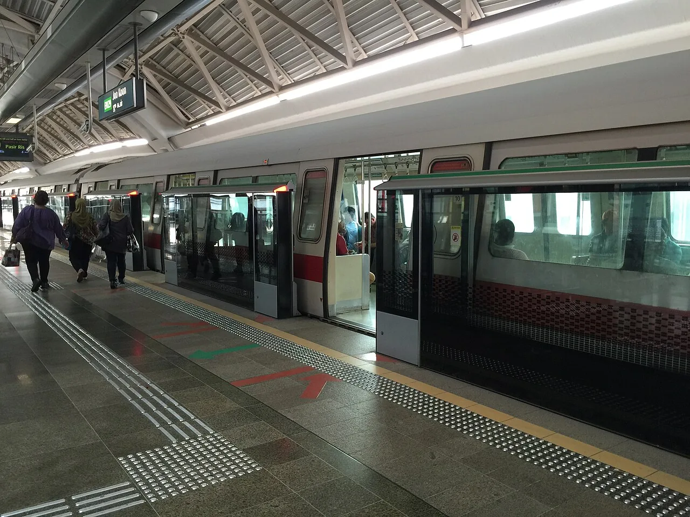

One source of truth
An integrated Primavera P6 schedule and a live executive dashboard replace scattered spreadsheets.

Vertex Capital Projects
Programme controls and project intelligence for major infrastructure — giving owners and contractors one trusted view of schedule, cost and risk.
An integrated Primavera P6 schedule and a live executive dashboard replace scattered spreadsheets.
Critical-path analysis and Earned Value indices surface slippage and cost drift early.
We control and report; we do not build. That independence keeps the picture objective.
About Vertex
Vertex Capital Projects is a Singapore-based project and programme controls consultancy. We support owners, developers and main contractors on large infrastructure and industrial programmes across the region, delivering the scheduling, cost-control, risk and reporting backbone that keeps complex projects on track.
Our services
Each service is delivered to recognised standards by senior specialists, from project mobilisation or as an independent input to work already underway.
We build, baseline and maintain the integrated programme that everything else measures against.
Learn moreWe translate work done into financial performance and a credible forecast to completion.
Learn moreWe make uncertainty visible and quantifiable so it can be managed, not feared.
Learn moreWe turn project data into a live, visual story leaders can act on in minutes.
Learn moreWe help set up the controls function and provide an objective second opinion when it matters.
Learn moreHow we work
Data is validated, analysed and turned into recommendations on a fixed cadence — so nothing is missed.
Agree the data interfaces and validate progress, cost and resource inputs.
Trusted inputsUpdate P6, reassess the critical path and compute Earned Value indices.
Performance truthRefresh risk scores, EAC and ETC forecasts and confidence ranges.
Credible rangesIssue decision-led reporting, agree actions and track them to closure.
Owned actionsSectors
We bring the same discipline and independence to four core infrastructure and development contexts.

01Earthworks, roads, drainage, utilities and supporting structures.

02Substations, distribution and utility networks with complex interfaces.

03Multi-package programmes needing tight cost and milestone control.

04Programmes with lender and stakeholder reporting obligations.
Latest insights
A frozen baseline turns a schedule from a picture of optimism into a reliable reference.
Read articleTwo indices can reveal whether the real pressure is productivity, sequencing or scope.
Read articleConfidence ranges show how robust a completion date really is.
Read articleStart a conversation
Let’s talk about how Vertex can help. Have a quick question first? Read our FAQ